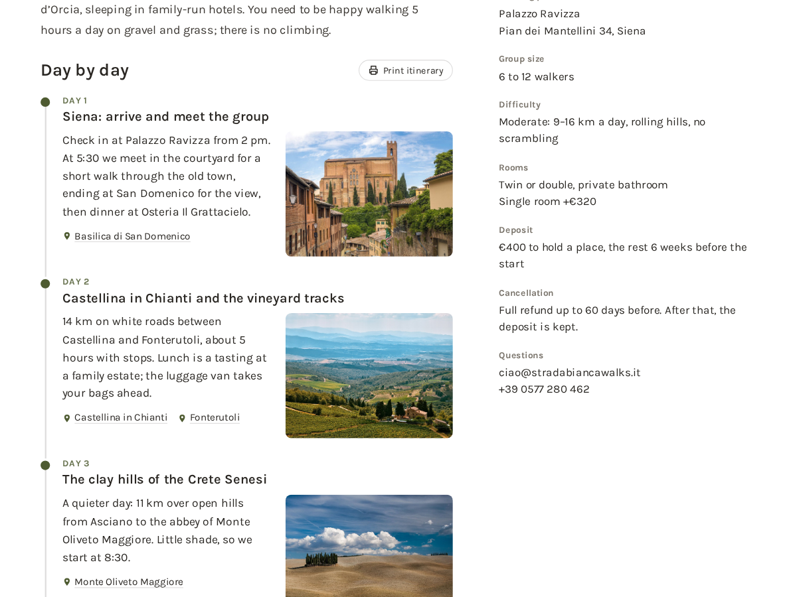

Itinerary
Day-by-day plans on your Bookings tours
- A day-by-day plan on each service page
- A title, text and photo for every day
- Included, not included and what to bring
- Print button and map links for each stop

What it does
People booking a five-day walk or a weekend retreat want to know what happens on each day before they pay. The Bookings service page only has one description box, so most tour operators end up pasting a long block of text or a PDF link. This app adds a proper day-by-day plan to each service page instead.
You write the plan in the dashboard, one service at a time: a title for each day, what happens, and a photo from your media library. On the page it shows as a timeline under your description, in your site's own fonts and text colour, so it looks like part of the page from the first minute. A service without a plan shows nothing.
Edits show on the live page as soon as you save. The free plan covers up to 3 days per service, each with text and a photo.
Premium is for longer trips: unlimited days, Included and Not included lists, a What to bring list, stops with map links, a print button (guests can also save the plan as a PDF), an accordion layout where each day opens on click, and copying a plan to another service so a second departure takes a minute. The free plan shows a small credit link under the plan. Premium removes it.
Price
Free
- Up to 3 days per tour
- Text and a photo for each day
- Timeline that uses your site's fonts
- Small credit link
Premium
$4/month, $3/month yearly (25% off). Hidden pre-made plan "Premium" (vendorId premium) stays hidden
- Unlimited days per tour
- Included, not included, what to bring
- Map links, print button, accordion
- Remove the credit link